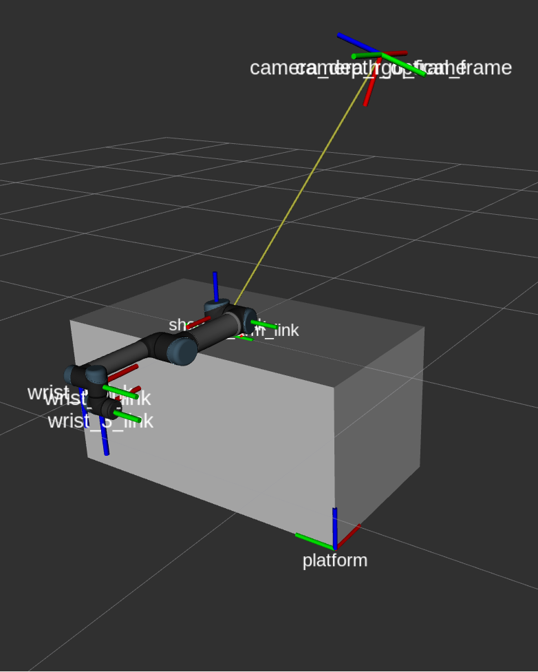

layout: true <div class="header"><img src="https://rosin-project.eu/wp-content/uploads/rosin_ack_logo_wide.png" style="background-color:transparent"/></div> <div class="footer"><img src="https://www.ipa.fraunhofer.de/content/dam/ipa/ipa.svg" /><p>© Fraunhofer IPA</p></div> <div class="triangle"></div> --- class: center, middle name: main_title # TF2 - TRANSFORMS IN ROS 2 --- ## TF2 - Overview * TF2 is the second generation of the TF (TransForm) library. In truth, TF in ROS 1 currently calls TF2 under the hood. ROS 2 uses exclusively TF2. * TF2 keeps track of all the coordinate frames in a tree structure. * Like most things in ROS 2, the TF2 API is still under development, but basic features are already usable. * TF2 vs TF - Faster, more efficient, new features and easier to extend. --- ## TF2 - Overview  --- ## TF2 - Design TF2 core is independent of ROS & `BufferCore` class provides APIs --- ## TF2 - Time Sync * Users can query for the transform between any 2 frames in a tree for any given point of time - even in the past! * Essential for an asynchronous/distributed system --- ## TF2 - Broadcasters Supply the transforms between frames (Dynamic/Static). * e.g : `robot_state_publisher` provides TF data based on URDF * e.g : User-written nodes with dedicated broadcasters --- ## TF2 - Listeners Can access the transform tree and lookup a specific transform between 2 frames (Blocking/Non-Blocking). ```python buffer = tf2_ros.Buffer() transform = buffer.lookup_transform("base_link","camera_link", rclpy.time.Time()) # Blocking transform = await buffer.lookup_transform_async("base_link","camera_link",rclpy.time.Time()) #Non-Blocking ``` Function prototype : `lookup_transform(target_frame,source_frame,time)` Using `rclpy.time.Time()` gives the latest available transform.